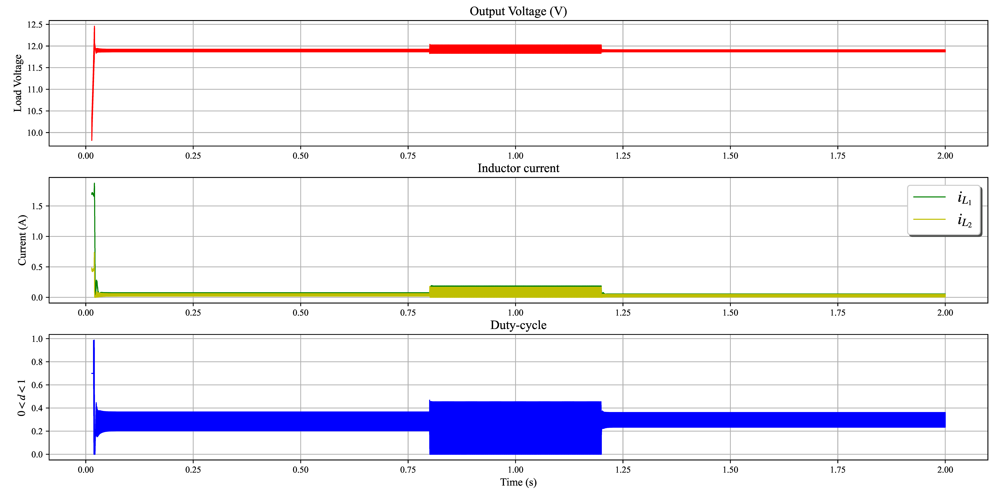
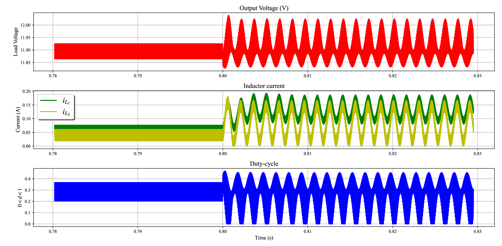
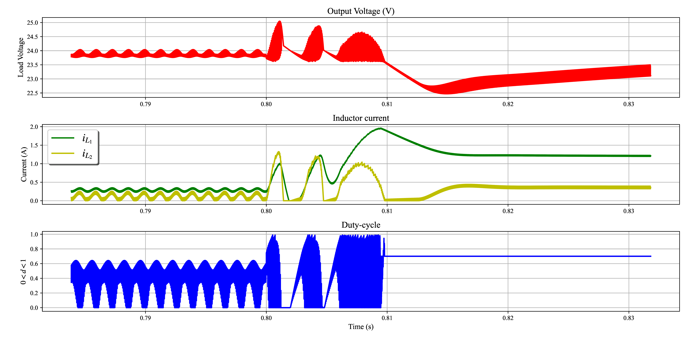

Nonlinear Control for Quadratic Boost Output Voltage Regulation
Fig. 1. Simulation results for the proposed controller and desired output xref = 12 V

Fig. 2. Zoom in for the proposed controller and desired output xref = 12 V

Fig. 3. Simulation results for PI controller and desired output xref =12 V
Fig. 4. Zoom in for PI controller and desired output xref = 12 V
Fig. 5. Simulation results for the proposed controller and desired output xref = 24 V

Fig. 6. Zoom in for the proposed controller and desired output xref = 24 V

Fig. 7. Simulation results for PI controller and desired output xref = 24 V

Fig. 8. Zoom in for PI controller and desired output xref = 24 V
